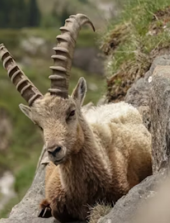
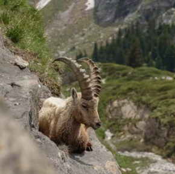
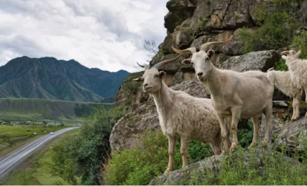

Capra pyrenaica
da família BovidaeA Capra pyrenaica, conhecida como íbex-ibérico ou cabra-montesa, é uma espécie de bovídeo nativa da Península Ibérica. Historicamente, sua distribuição incluía o sul da França, Andorra, Espanha e Portugal, mas atualmente é encontrada principalmente nas áreas montanhosas da Espanha e do norte de Portugal.
A pelagem varia conforme a estação, tornando-se mais comprida e acinzentada no inverno.
O íbex-ibérico é ativo tanto de dia quanto de noite, com maior atividade durante a manhã e o final da tarde. No inverno, são mais ativos durante as horas mais quentes do dia. Eles são animais sociáveis, formando manadas que podem mudar frequentemente de composição. Durante a época de acasalamento, machos e fêmeas se reúnem, e os machos competem violentamente pelo direito de acasalar.
A dieta do íbex-ibérico é variada, consistindo principalmente de gramíneas, ervas e brotos de árvores. Eles são adaptáveis e podem alterar sua dieta conforme a disponibilidade de alimentos em seu habitat. Essa flexibilidade alimentar é crucial para sua sobrevivência em ambientes montanhosos e rochosos.
"Não se aproxime de uma cabra pela frente, de um cavalo por trás ou de um idiota por qualquer dos lados."
Provérbio Judeu
- Estado de Conservação: Criticamente Ameaçado
- Ordem: Artiodactyla
- Família: Bovidae
- Gênero: Capra
- Idade média: 18 anos
- Macho: 80,0 kg
- Fêmea: 40,0 kg
A reprodução ocorre nos meses de novembro e dezembro, com as fêmeas dando à luz um único filhote após um período de gestação de cerca de 160 dias. Os filhotes são amamentados e cuidados pelas mães até estarem prontos para se juntar à manada.
Duas das quatro subespécies de Capra pyrenaica estão extintas: a Capra pyrenaica lusitanica, extinta em 1892, e a Capra pyrenaica pyrenaica, extinta em 2000. As subespécies sobreviventes são a Capra pyrenaica hispanica e a Capra pyrenaica victoriae, encontradas em diferentes regiões da Espanha.
AA conservação do íbex-ibérico é considerada de menor preocupação pela IUCN, devido à sua população estável e ampla distribuição. No entanto, a caça e a perda de habitat continuam sendo ameaças significativas. Esforços de conservação incluem a proteção de habitats e a regulamentação da caça.
Em resumo, a Capra pyrenaica é uma espécie notável por sua adaptabilidade e comportamento social complexo. Sua presença nas montanhas da Península Ibérica e sua interação com o ambiente fazem dela um objeto de grande interesse para a biologia e a conservação.
